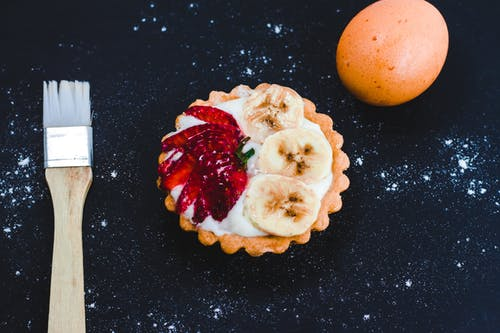
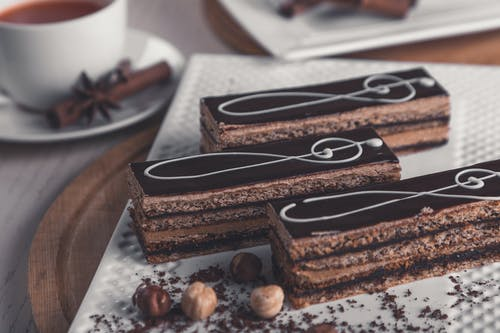
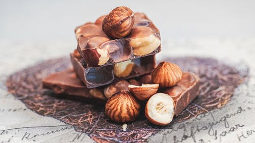
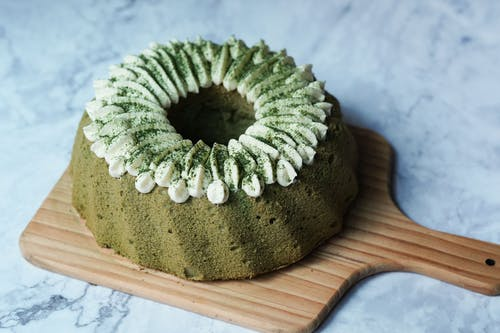
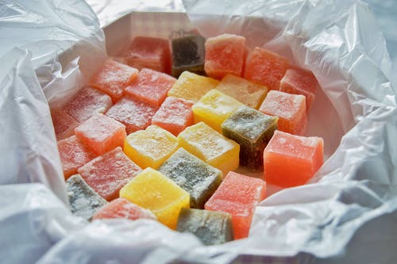
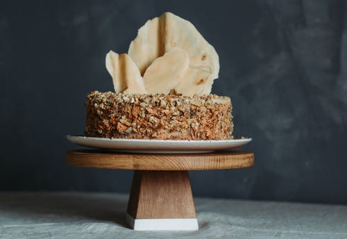
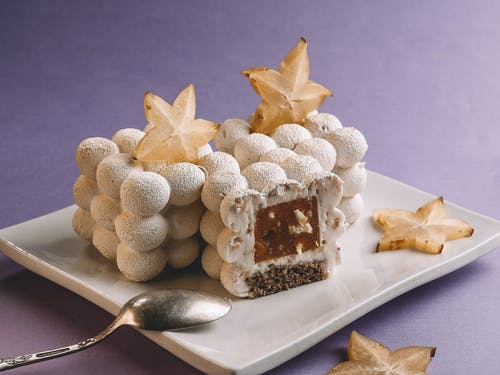
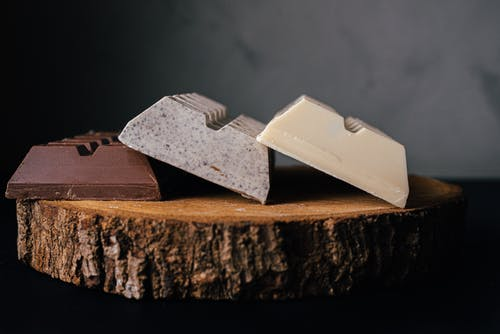

賊賊廚房
給忙碌的你，另一種選擇!
| 商品實照 | 品名 | 價格 | 介紹 |
|---|---|---|---|
|  | 香蕉乳酪塔 | 600元/9入 | 一口大小的乳酪塔採用丹麥進口乳酪為基底，搭上廚師的巧手成為顧客最愛的伴手禮之一。草莓裝飾為冬季限定，為了口感與味道的調配，我們會視季節變化搭配適合的水果。 |
| 焦糖橙片 | 340元/袋 | 細心清洗的橙片，保留外皮進行醃漬，清爽不死甜是店長最愛的零食喔! | |
|  | 可可森林蛋糕 | 140元/塊 | 原料使用比利時進口巧克力，手炒加熱巧克力後重新調出完美比例，適合喜歡苦味巧克力的人! |
|  | 核果巧克力 | 480元/袋 | 此款巧克力較甜，但是透過與核果完美的比例(2:8)，調配出了一口接一口的美味! |
|  | 抹茶和風裸蛋糕 | 420元/個 | 我們採用了小山園抹茶來製作裸蛋糕，因為店長本身是抹茶控，所以這個蛋糕也被設定成超抹的口味，喜歡抹茶的朋友一定要嚐嚐看! |
|  | 歐式軟糖糕 | 320元/盒 | 台灣少見的軟糖糕，因為想要帶來更偏向糕而非糖的口感，我們採用歐式的方法製作，內含四種水果口味，並依季節不同而更改水果種類。 |
|  | 茶冠 | 680元/個 | 茶冠是本店從開賣甜點到現在都沒有換過的品項，帶有古典優雅的外觀，主要口味以焙茶、烏龍、錫蘭紅茶為主。來自不同國度的茶種一起組成一個高雅的王國! |
| 淺底南瓜派 | 460元/個 | 此款南瓜派保留了大量的南瓜滋味，酥脆的外皮與少見的南瓜做搭配，也是本店的熱銷商品呢! | |
|  | 第九元素 | 190元/個 | 第九元素的口味跟他的外觀一樣，表現得很神秘。內餡主要以咖啡慕斯跟核果碎片做基底，再搭配鮮奶油來調和苦味。 |
|  | 磚式巧克力 | 1080元/3入 | 看似簡單的巧克力，從可可的採收、熟成，一直到製作完成都由我們的巧克力大廚親自監督，其中包含原味、芝麻、牛奶三種口味，趕快來嚐嚐吧!/td> |